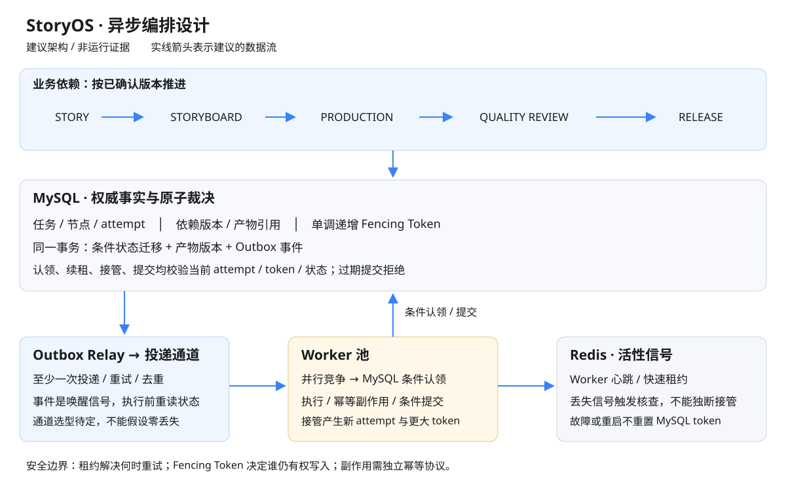

报告目录
StoryOS 异步编排架构评审
一、评审结论
评审依据仅为本次提供的设计要求，未读取 StoryOS 源码、数据库定义、部署配置或运行日志，未执行业务测试。本文给出可审查的建议协议及验收条件，不代表现有系统已经实现。文中状态名和字段均为逻辑建议，不构成公共接口或数据库变更。
核心不变量：每个节点同一时刻只有一个有效提交者；已完成阶段只对已确认的输入版本有效；任务成功必须由所有必需节点完成推导，RELEASE 还必须具备可核对的发布凭据。消息送达、Redis 存活或外部调用返回成功，都不能单独证明任务完成。
二、总体方案

STORY → STORYBOARD → PRODUCTION → QUALITY REVIEW → RELEASE 表示依赖顺序。质量审核通过后才能创建可发布版本；审核失败时应进入待处理状态，按明确的返工策略产生新版本，不能默默覆盖已审核产物。阶段内部可以拆成多个并行节点，汇聚条件必须由必需子节点集合及输入版本确定。
| 职责 | 建议设计 | 边界 |
|---|---|---|
| MySQL 持久化 | 任务、节点、attempt、依赖/产物版本、执行权 token、租约截止时间、Outbox。 | 状态变更与事件写入同一事务；任务汇总状态也须防并发覆盖。 |
| Redis 心跳与租约 | 按 Worker 实例与启动代次记录心跳，租约携带 owner 与 token；续租/释放使用原子比较。 | 心跳是活性信号，不是节点执行权证明；Redis 丢失不能重置 token。 |
| Outbox 投递 | Relay 扫描已提交事件，确认投递后标记；失败退避重试，超限报警与人工重驱。 | 发送后标记前崩溃会重复；消费必须幂等。传输通道、确认与保留策略待选型。 |
| Worker 执行 | 收到事件后重读节点，原子认领，执行并按 token 提交；产物以 attempt 或版本隔离。 | 不得先覆盖正式产物再校验 token；外部副作用不能只靠数据库拦截。 |
三、并发与恢复协议
（一）认领、续租与超时接管
- 节点依赖就绪后进入可认领状态。竞争 Worker 在 MySQL 事务内通过行锁或条件更新争抢；仅一方获得执行权，并创建新 attempt、递增节点 token、记录 owner 与租约截止时间。锁粒度限定为节点，避免全任务串行化。
- Worker 续租必须匹配当前 owner、attempt 和 token，且租约尚未到期；使用数据库时间判定截止时间。MySQL 续租裁决成功后更新 Redis 信号；两处更新无法原子化时允许短暂不一致，但执行权始终服从数据库。
- 恢复扫描器以 MySQL 中已过期且仍在运行的节点为候选，Redis 心跳辅助排查。接管使用条件更新再次校验状态、旧 token 和到期时间；成功者递增 token 并建立新 attempt。续租与接管竞争必须在同一数据库锁/条件协议下串行裁决。
- 运行态提交需匹配当前 token、attempt、owner、有效租约和预期状态，受影响行数必须等于一。提交事务同时写入产物引用、完成状态和后续 Outbox 事件。旧 Worker 迟到或租约过期后即使无人接管，也不能提交，应重新认领。
Fencing Token 的生成范围应至少覆盖被保护的节点或资源，并持久化单调递增。Redis 自增值在恢复、清空后可能回退，不能单独承担该约束。token 表示执行代次；业务版本表示输入和产物语义，两者不能混用。
（二）断点恢复与幂等
建议节点状态为待依赖、就绪、运行、成功、可重试失败、终止失败、取消；具体命名待实现核对。断点只在已持久化、可校验的产物边界恢复。恢复前核对输入版本、产物完整性及依赖快照；不完整产物隔离并重算。上游变更须使受影响下游版本失效，避免旧 QUALITY REVIEW 为新产物背书。
事件以稳定 event_id 去重，节点以业务节点与输入版本保证逻辑唯一；去重记录应与本地状态变更同事务。重复消息遇到成功节点只返回既有结果，不能再次推进下游。事务提交后未确认消费会重投，这是预期恢复路径。
RELEASE 使用跨重试稳定的业务幂等键（任务、发布版本、目标），不能以每次变化的 attempt 作为发布去重键。若发布方支持条件写入或 token，应传递并验证；否则使用幂等接口与查询对账。调用超时但结果未知时先查询，不能直接重发。不支持这些能力的外部系统只能提供风险受控的补偿方案，不能承诺端到端恰好一次。
（三）恢复闭环与可观测性
恢复扫描同时覆盖运行租约过期、就绪但无有效投递、Outbox 长期未投递、外部结果未知及任务汇总滞后。重试使用退避、抖动与上限；终止失败保留人工重驱入口和审计记录。取消应撤销执行权并阻止下游推进，已发生的外部副作用单独补偿。
建议按 task_id、node_id、attempt_id、token、event_id 关联日志；监测过期接管数、旧 token 拒绝数、Outbox 最老积压、重试次数和发布未知结果数。告警阈值需结合运行时长分布和业务恢复目标制定，本文不虚构数值。
四、风险与未验证事项
| 风险 | 后果与建议 | 需补证据 |
|---|---|---|
| 双重租约权威 | Redis 与 MySQL 分歧导致双执行；统一由 MySQL 裁决，Redis 仅优化探测。 | 认领、续租、接管 SQL 及事务隔离/受影响行数检查。 |
| Fence 只保护状态表 | 旧 Worker 仍覆盖对象文件或外部发布；使用不可变对象与条件指针切换，约束所有副作用。 | 存储写入策略、发布接口和幂等键作用域。 |
| Outbox 双写或提前确认 | 状态成功但通知丢失；同事务持久化，发送确认后标记并允许重复。 | Relay 崩溃点、通道持久性、消费事务边界。 |
| 长任务与暂停 | GC、网络隔离导致误接管与成本放大；接受重复计算，拒绝重复提交，设置续租和重试预算。 | 执行耗时分布、租约参数、数据库时钟及主从切换行为。 |
| 并行汇聚与返工版本 | 提前推进、重复推进或旧审核被复用；依赖版本固定，汇聚条件在事务内检查。 | 节点唯一约束、审核门禁、取消及返工状态机。 |
| 数据库故障恢复 | 持久化历史回退可能破坏 token 单调性；恢复后隔离旧 Worker，重建执行代次并对账。 | MySQL 持久化与故障切换保证、备份恢复及旧进程隔离方案。 |
未验证范围包括：数据库结构与索引、事务实现、Redis 故障策略、投递组件、产物存储、审核规则、发布目标能力、权限隔离、容量及恢复耗时。本文未读取或修改 Git 仓库，未访问网络；架构结论来源于需求和协议推演，无代码级发现或实测通过声明。
五、建议验收用例
以下均为待执行用例。应在可注入故障的环境中保留状态快照、关联日志和外部副作用记录，以不变量断言验收；仅观察最终页面成功不足以证明协议正确。
| 场景与注入点 | 必须观察到的结果 |
|---|---|
| 完整五阶段；QUALITY REVIEW 拒绝后返工 | 按依赖推进；拒绝时无 RELEASE；返工新版本重新审核，旧通过记录不得复用。 |
| 多个 Worker 同时认领同一节点 | 仅一个有效认领；token 单调增加；其他认领无写入权；不同就绪节点可并行。 |
| A 暂停越过租约，B 接管并提交，A 恢复 | A 的状态和产物指针提交均拒绝；B 产物保持有效；外部发布无重复可见副作用。 |
| 续租与接管在截止边界竞争 | 仅一个裁决成功；不存在旧 token 被重新续活，使用数据库时间判定。 |
| 业务事务提交前/后杀进程 | 提交前状态与事件一起回滚；提交后 Outbox 最终可投递，无已成功节点永久失联。 |
| Relay 发送后、标记前崩溃；重复/乱序消费 | 允许重投；每版本逻辑完成一次；事件不能绕过依赖检查；下游不重复创建。 |
| Redis 中断、数据清空或 Worker 心跳丢失 | MySQL token 不回退；不凭 Redis 单方面接管；恢复后不会形成两个有效提交者。 |
| 产物上传后、状态提交前崩溃 | 孤立产物可识别并回收；正式引用不指向半成品；按持久化断点恢复。 |
| 发布成功但响应丢失，随后超时重试 | 使用稳定幂等键查询并收敛到同一发布凭据；未知结果不被盲目标为成功或重复发布。 |
| 并行子节点同时完成；完成与取消竞争 | 汇聚后续只创建一次；取消后的迟到提交失效；终态及审计一致。 |
| MySQL 切换/备份恢复，旧 Worker 仍在运行 | 恢复流程隔离旧执行者；历史 token 不被复用为有效权利；外部副作用完成对账。 |
| 持续投递失败与重试耗尽 | 积压可报警、可定位、可重驱；退避不形成风暴；终止失败不会显示任务成功。 |
建议验收产物：每个用例的故障时间线、SQL 裁决行数、token 变化、事件去重记录、产物校验及发布凭据。通过这些证据再决定是否上线；本文不提供预填的通过状态。